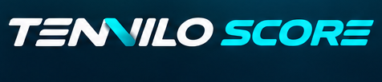
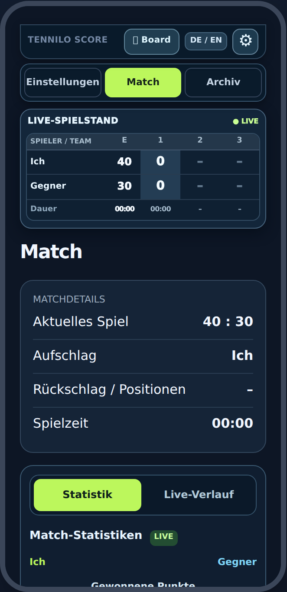

RANDOM CHOICE
Wer muss?!
Everyone places a finger on the screen. The countdown decides who's up.
WHERE IT ALL STARTED


Not a big portfolio. Just a quick guide to the things I'm working on – and the places you can find me online.
SEE WHAT’S TAKING SHAPESome projects start with a question. Others on the tennis court. Here's what I'm working on right now.
TENNILO Score is taking shape for Apple Watch and iPhone. Keep score, follow the match and focus on the court.

 UMPIRE
UMPIRE WER MUSS?!
WER MUSS?!Five projects – including TENNILO Score as my current focus, with Tournament and Umpire under the same brand.

 Tournaments & rules
Organising and running tennis tournaments with confidence. Tennis-Schiri brings together tournament management, referee assignments and services for tennis clubs – including rules advice, workshops and upcoming events.
02
Tournaments & rules
Organising and running tennis tournaments with confidence. Tennis-Schiri brings together tournament management, referee assignments and services for tennis clubs – including rules advice, workshops and upcoming events.
02


Scorekeeping app · Apple Watch · In development TENNILO Score – keep score right from your wrist. A tennis scorekeeping app for Apple Watch, with an accompanying iPhone app. Planned beta test: 27 December 2026 at a ranking tournament in Bad Saarow; targeted launch in spring 2027. 03 Tournament management · In development
TENNILO Tournament – organise tournaments digitally. A web app under the TENNILO brand for club and organiser events: formats, draws, schedules, results and live score displays.
04
Umpire app · In planning
TENNILO Umpire – digital tools for tennis officials. Planned features include a modular interface for officiating matches and sending scores to external scoreboards.
05
Tournament management · In development
TENNILO Tournament – organise tournaments digitally. A web app under the TENNILO brand for club and organiser events: formats, draws, schedules, results and live score displays.
04
Umpire app · In planning
TENNILO Umpire – digital tools for tennis officials. Planned features include a modular interface for officiating matches and sending scores to external scoreboards.
05
Real screenshots from the TENNILO Score demo – from wrist to phone to the live scoreboard.


Away from the tennis court, a small collection of playful apps is taking shape. Short, silly, surprising – and made for those moments in between.
Everyone places a finger on the screen. The countdown decides who's up.
Stop the clock at exactly 5, 10 or 15 seconds. Harder than it sounds.
Tap the green circles, avoid the coral ones. Twenty frantic seconds.
The coffee cup wobbles. Keep it balanced and spill as little as possible.
Keep inflating the balloon or stop now? More risk means more points.
Outrageous guessing questions for two to four players. Who gets closest?
Tennis tournaments, digital tools and little everyday ideas may seem worlds apart. What connects them is the joy of finding a simpler way – and then actually building it.
Find me
elsewhere.
Quick links, not long introductions. Find my profiles and project channels here.